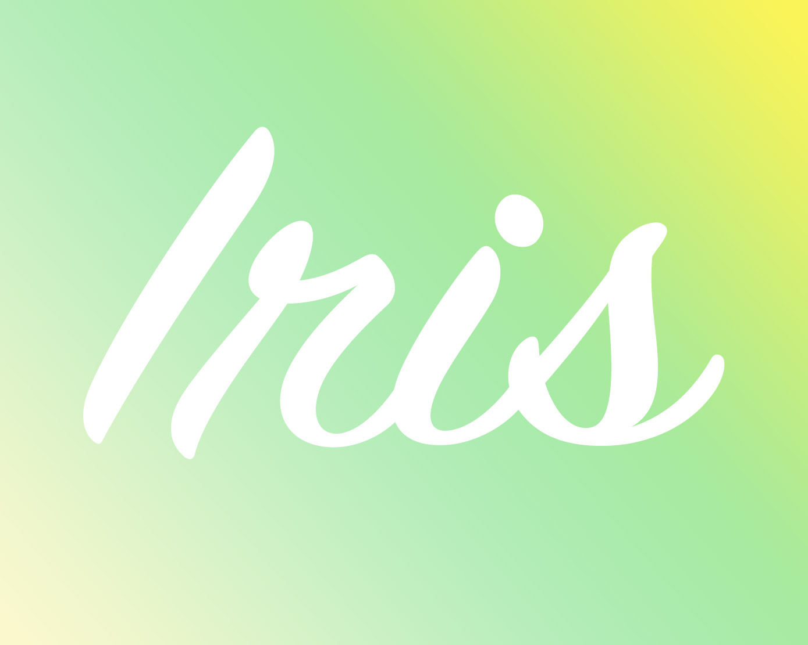

<nav class="navbar is-primary" role="navigation" aria-label="main navigation">
  <div class="navbar-brand">
    <a class="navbar-item logo" routerLink="/">
      
    </a>

    <a role="button" class="navbar-burger burger" aria-label="menu" aria-expanded="false"
       (click)="navbar.classList.toggle('is-active')">
      <span aria-hidden="true"></span>
      <span aria-hidden="true"></span>
      <span aria-hidden="true"></span>
    </a>
  </div>

  <div class="navbar-menu" #navbar>
    <div class="navbar-start">
      <a class="navbar-item" routerLink="/">
        History
      </a>

      <a class="navbar-item" routerLink="/relationships">
        Relationships
      </a>

      <a class="navbar-item" routerLink="/reminders">
        Reminders
      </a>

      <a class="navbar-item" routerLink="/credits">
        About
      </a>
    </div>
  </div>
</nav>
